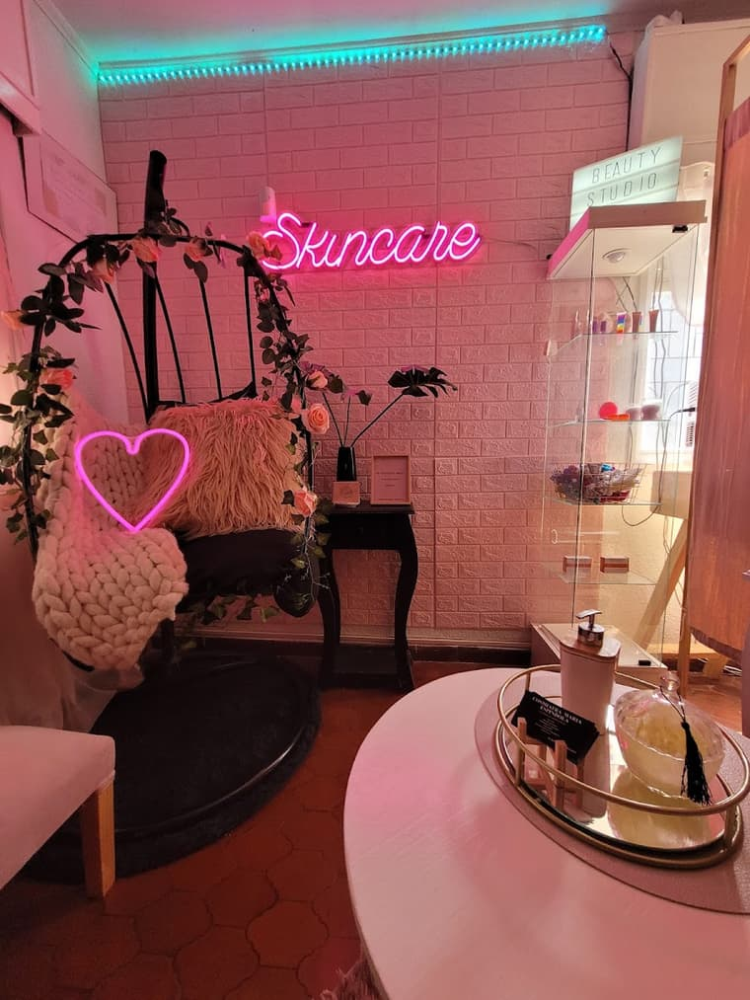
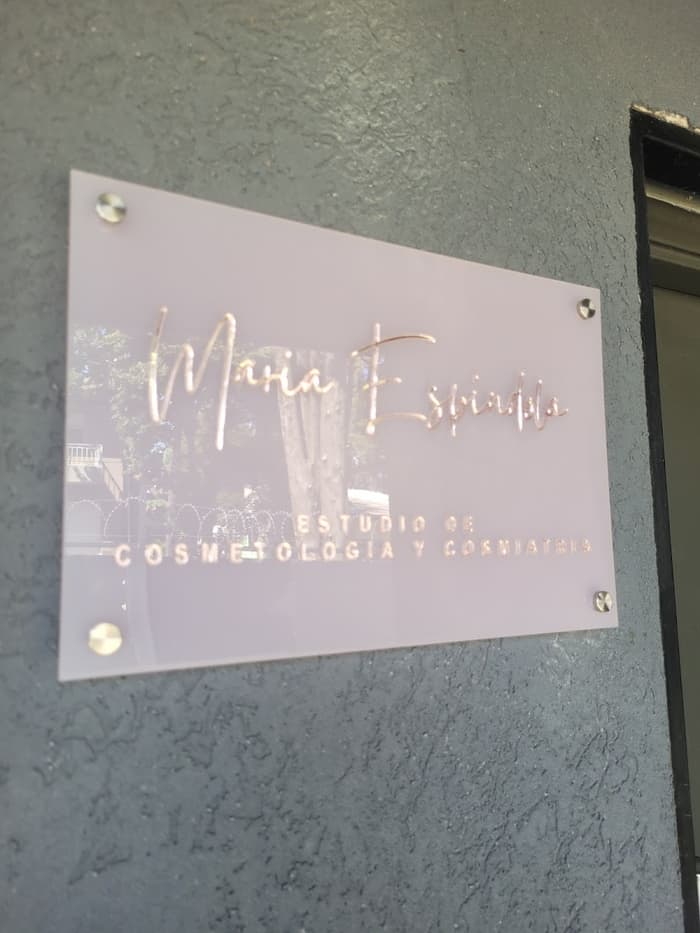
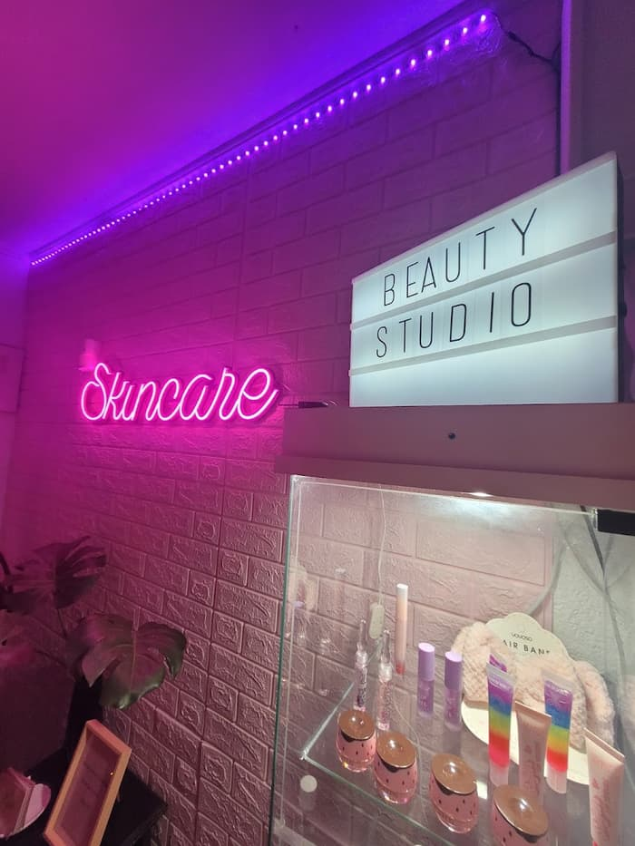
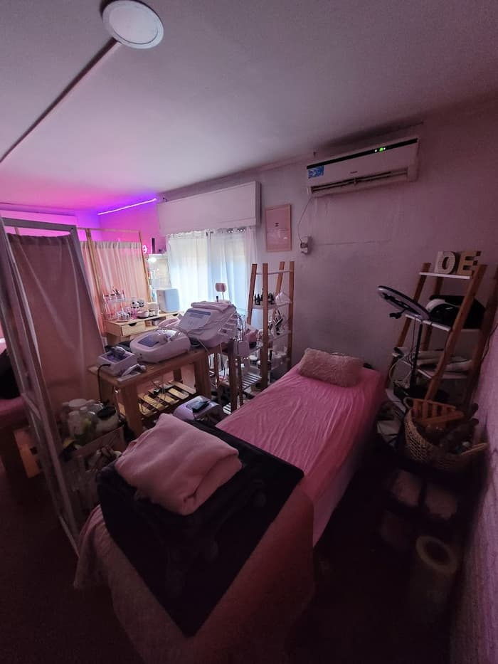

Skincare · Boulogne
Acné severo, rosácea y piel sensible.
Estudio de Cosmetología y Cosmiatría de María Espíndola, cosmiatra oncológica. Desde 2005.
Los botones de contacto se activan cuando arrancamos con la versión oficial.

- Desde 2005en cosmiatría
- Oncológicacosmiatra especializada
- 5,0en Google · 37 opiniones
- BoulognePadre Castiglia 1239
Tratamientos
¿Qué querés trabajar?
Acné y piel sensible
Acné severo, rosácea y piel sensible: lo primero que María nombra en su presentación.
- Antiacné
- Rosácea
- Piel sensible
Piel en tratamiento oncológico
María es cosmiatra oncológica: acompaña el cuidado de la piel de quienes están en tratamiento.
- Cosmiatría oncológica
Firmeza
Aparatología y tratamientos para trabajar la firmeza del rostro.
- HIFU
- Radiofrecuencia
- Exosomas
- Plasma frío
Textura y luminosidad
Para renovar la piel y mejorar su textura.
- Peeling
- HydraFacial
- Microneedling
Cuerpo
Tratamientos corporales en el mismo estudio.
- Maderoterapia
- Láser lipólisis

Sobre María
Más de veinte años cuidando la piel.
- Desde 2005en cosmetología y cosmiatría
- Cosmiatra oncológicacuidado de la piel durante el tratamiento
- MN 20857 · MN 16802matrículas
El estudio
Tu momento de skincare, en Boulogne.


Cómo reservar
Tu turno en tres pasos.
Escribís
Contás qué querés trabajar y qué día te queda bien.
Seña del 50 %
Todos los turnos se toman con una seña del 50 %.
Comprobante
Enviás el comprobante y tu turno queda reservado.
Horarios y dirección
De martes a sábado.
| Martes a viernes | 9 a 12 hy de 16 a 20 h |
|---|---|
| Sábados | 9 a 16 h |
| Domingo y lunes | Cerrado |
Boulogne, Provincia de Buenos Aires
Reservá tu turno.
Martes a sábado, en Padre Castiglia 1239, Boulogne.
Los botones de contacto se activan cuando arrancamos con la versión oficial.